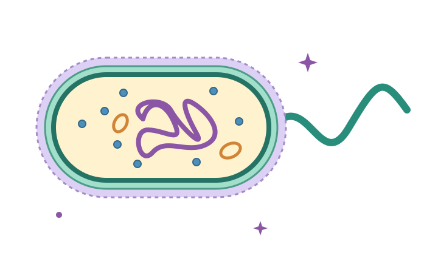
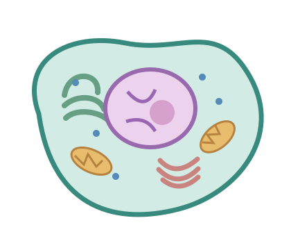
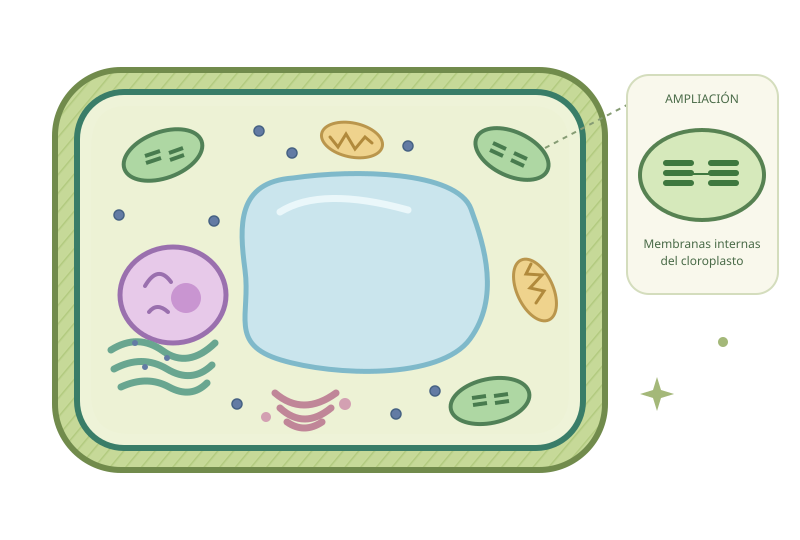
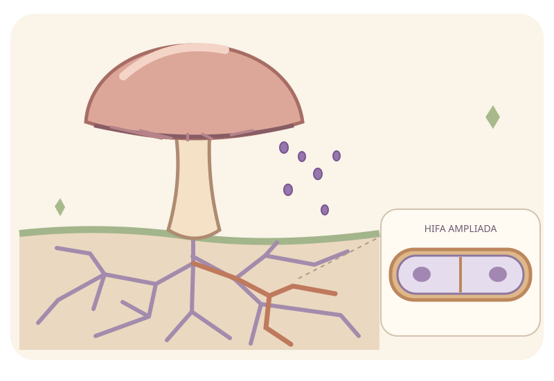

Toca y descubre.
Cada parte del dibujo tiene una función. Sigue las pistas.
KENISA · Laboratorio de vida
Un mundo pequeño.
Muchas formas de vivir.
Explora las células, combina sus características y descubre el Reino Fungi. Cuatro actividades para conectar la diversidad de la vida.
Comenzar actividad 01

Tu recorrido · 04 de 04 disponibles
Una actividad para observar,
tomar decisiones y entender el porqué.
Descubre ocho estructuras, clasifica organismos y encuentra la diferencia que de verdad importa.
Entrar a la actividad
Pared, cloroplastos y vacuola: conecta sus funciones con la fotosíntesis y descubre por qué las plantas también respiran.
Explorar la célulaUn organismo, muchas etiquetas. Combina tipo celular, organización y nutrición sin confundir sus criterios.
Armar pasaportes
Descubre sus estructuras, ordena su nutrición y conecta reproducción, diversidad e importancia con casos cotidianos.
Entrar al Reino FungiCada parte del dibujo tiene una función. Sigue las pistas.
Una levadura tiene una sola célula. ¿Eso la hace procariota?
Revisa las respuestas y practica otra vez lo que necesites.